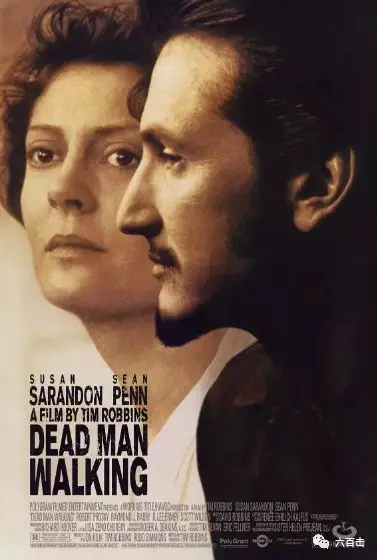
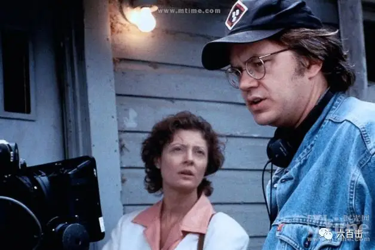
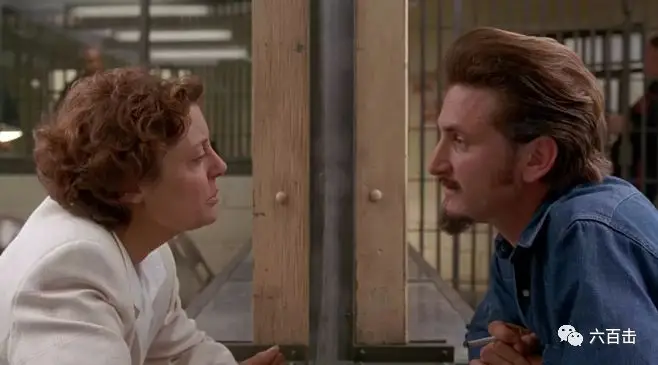
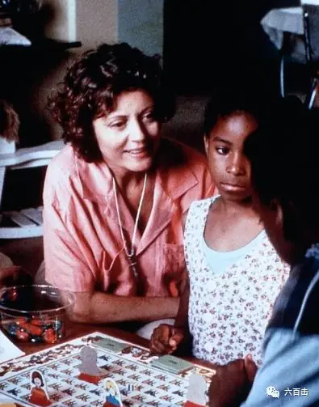
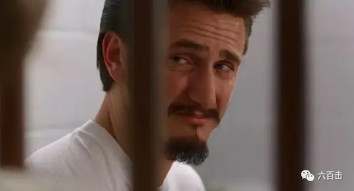

对于影迷来说，《肖申克的救赎》是一部必看的经典，坚持二十年并最终冲破监狱重获自由的安迪绝对是难以忘记的银幕形象。
但是安迪的扮演者蒂姆·罗宾斯不仅仅是一个伟大的演员，还是一个多面手。
蒂姆作为导演和编剧创作的《死囚上路》曾获当年奥斯卡最佳女主角奖、最佳男主角奖、最佳导演奖、最佳歌曲奖四项提名，并最终斩获最佳女主角奖。

而凭此片摘得奥斯卡影后的苏珊·莎兰登是蒂姆·罗宾斯的前妻，这对姐弟恋一起走了21年，最终在2009年宣布和平分手。

▲ 作为导演的蒂姆·罗宾斯
苏珊·萨兰登曾因出演《落基恐怖秀》以及路易·马勒的《漂亮女孩》而声名大噪。
她为了更好地把握《死囚漫步》的角色，苏珊去新奥尔良郊外的一所监狱呆了一个星期。
下苦功夫再加上精湛的演技，使得苏珊塑造的海伦给观众留下了深刻印象，并一举获得奥斯卡影后。
电影的男主角西恩·潘更是历史上第二位同时获戛纳、柏林、威尼斯、奥斯卡的超级影帝。
蒂姆·罗宾斯因为扮演囚徒而著名，而本片同样是关于囚徒的。
电影改编自修女海伦·培贞的同名书，这本书是海伦根据自己的真实经历而创作的，曾连续31周蝉联《纽约时报》畅销书籍榜首。
▲ 主创一起探讨剧本
西恩·潘饰演的死囚马修因犯下滔天罪行而被判死刑。
多年前他和维特洛在树林里杀害了一对年轻情侣。
两人残暴变态至极，不仅狂刺女孩数十刀，还强暴了女孩。
如果科恩嫂穿越过来，两人绝对会受到一万点暴击。
事情败露后，维特洛因有钱请了好的律师为自己辩护而免于一死，最终被判无期徒刑，而经济窘迫的马修却被判死刑。
电影开始于马修行刑前的一周，所以我更喜欢电影的另一个名字《死囚168小时》。
在这最后的168个小时，一个杀人犯可以做什么？
死亡让这个穷凶极恶的马修有了真正的恐惧，他想要求生。
这样一个恶徒人人得而诛之，没有一个人愿意帮他。
唯一给他希望的是和他进行书信往来的修女海伦，她在一个黑人社区服侍当地的孩子。
海伦非常单纯，在她看来，马修虽然罪无可恕，但是按照信仰的原则，马修仍然需要关心。
就这样，海伦去监狱探视了马修，监狱牧师和其他警官都在提醒海伦：不要被他的话蒙蔽了，马修为了求生可能会利用你的单纯和善良。

事实上，当马修看到海伦后，并不是央求，而是挑衅，他不相信任何人，因为他就是被自己的妻子举报的。
他丝毫不觉得自己有罪，反而觉得不公平，因为维特洛判了无期，而自己是死刑。
所以马修仇恨任何人，即使是神职人员。
相信此前一定有基督徒因他的挑衅而恼羞成怒，认定这样的人下地狱完全是自找。
面对马修的轻佻，海伦严正地说：“我来这不是给你娱乐，请你尊重我。”
马修依旧很挑衅地说：“为何？因为你是修女，戴十字架项链？”
海伦很严肃地告诉他“因为我是一个人，所有人都该得到尊重。”
正是海伦这份不卑不亢的姿态赢得了马修的尊重，他甚至直言告诉她：“我不相信这里的人，但你没有惺惺作态，或对我传道，所以我尊重你......你有胆量，你住在人人带枪的黑人社区。”

马修告诉海伦，当年他并没有开枪射杀这对情人，两人都是被维特洛杀害，而维特洛判无期徒刑，而自己却是死刑。
这显然是不公平的，马修请求海伦请律师为自己辩护，将死刑降为无期徒刑。
而接下来的一周，电影并不是扣人心弦的法庭戏，也没有高潮迭起的剧情反转。
虽然海伦还是请了律师为马修辩护，律师也尽了自己最大的努力，但是法庭仍然维持原判，驳回了他们的上诉请求。
马修似乎难逃一死，电影唯一的悬念就是当天马修究竟多大程度上参与了这场暴行。
而这个真相也只有马修自己知道。
因此，这不是一部悬疑片，而是一场关于信仰与爱的挑战。
-01- 马修是否值得以爱相待
这个挑战首先是留给海伦和镇上其他人的。
受害情侣的家人因为这场惨剧经历了巨大的悲痛和绝望，唯有十恶不赦的凶手马修被处死，才能安慰和释放他们的悲伤。
受害者的家人们绝不会对马修有一丝怜悯，甚至他们认为马修不配受到宗教意义上的饶恕和上帝的怜悯，他们认为马修的存在就是上帝创造的失误。
所以当他们看到一个修女竟然为马修辩护甚至给予他关心的时候，受害者的家人们非常不理解，甚至非常气愤。
家属质问海伦，“修女，我是天主教徒，为什么你可以坐到马修的身边，却不来找我们谈谈，了解我们的感受？......为什么你（作为一个修女）会为罪犯担忧，而没有考虑到或许我们需要你？”
显然，他们认为海伦的善良应该用在正确的地方，而不是浪费时间在马修这样的人身上。
镇上其他的人得知这个惨剧，自然也都是站在受害者的一方，坚决支持处死马修。
罪恶如果没有给予彻底的打击，正义如何伸张，因此镇上的人们包括狱警甚至是监狱的牧师都不同情这个罪大恶极的坏蛋。
对于海伦而言，事实上，她并没有站在马修或者受害者的任何一边，她努力践行者耶稣的教导，她知道耶稣没有放弃瘫子、妓女、穷人，所以她尊重马修，她也为受害者的家属流泪祷告。
在大家的不理解和指责下，海伦经受着巨大的心里压力。
-02- 谁可以让坏蛋悔改
上帝是公义的，流人血的也必被人流血，马修注定难逃刑罚。
但是刑罚可以让马修知错么？
显然，落入监狱、被叛死刑的马修不认错。
不仅不认错，他认为这个世界太不公平。
就因为自己没钱请好的律师和专家，就要被剥夺生命。
马修非常不服。
所以一向嚣张跋扈的马修甚至在电视采访中大放厥词，说希特勒屠杀犹太人是对的，声称自己会参加恐怖组织，会炸毁政府大楼。
这让海伦奔溃：“我怎么会帮这样一个人？我一定是疯了。”
马修要比《圣经》中行淫时被抓的妇人更难悔改，圣经中的妇人对要拿石头打死自己的众人非常害怕，也为自己的行为羞耻的无法抬头。
而马修面对要处死他的政府，却很仇视地说：“我对这个政府毫无感情”。
死刑可以让马修恐惧，却不会让他认错。
甚至他对受害者的父母也毫无怜悯，在他眼中，受害者的父母就是想要自己的命。
极端的自我让马修根本看不到别人的眼泪和受伤。
面对心比石头都刚硬的马修，海伦愤怒地说：“你这个笨蛋，你想过被害人的父母没有？他们的儿女被枪击、中刀、强奸、弃尸荒野，若你家人有此遭遇，你会如何？”
马修让海伦抓狂甚至崩溃，但是海伦并没有放弃，艰难中，小时候的一段经历不停地在她的脑海浮现。
小时候的海伦生了一场病，身体非常难受，当妈妈来照顾她时，烦躁的海伦对妈妈大吼大骂，而妈妈却将她紧紧地抱在怀里，正是妈妈的爱融化了海伦的烦躁。
这个经历让海伦明白，去爱、去拥抱才能让一个处于极端自我、对整个世界大叫大骂的坏蛋悔改，只有让他们感受到被爱，他们才能重拾做人的尊严和良知。
海伦坚持陪伴马修，虽然并没有帮助马修逃过死刑，但是海伦真诚的帮助和聆听却改变了马修。
在最后一天，马修终于告诉她实情，那一晚，马修不仅强暴了女孩，而且开枪射杀了男孩。
对海伦的谎言都是马修临死前的最后挣扎。
马修的确是犯下了十恶不赦的罪行，他必须要接受法律的制裁。
而海伦的真诚将耶稣的爱带给了马修，马修在最后一刻终于在这份真理中得享自由。
海伦问他：“他们的死你肯负责吗？”
马修：“我肯……昨晚我跪在床前，为他们祈祷，以前从未试过……”
海伦：“有些伤痛只有上帝才能抚平。你制造了惨剧，但你现在重拾尊严，谁也不能剥夺。你是上帝的孩子。”
马修：“从没人说过我是上帝的孩子，他们都是说我是混蛋，我希望我的死能让对方家长好过。”
海伦：“你能为他们做的，就是祈求他们的心得到平静。”
马修：“我从未得到过真爱，从未爱过女人或任何人，现在快死了，却获得了爱……感谢你爱我……”
海伦：“马修，赎罪不是免费上天堂的方法，只是耶稣为你付上了全部的代价。

海伦最终陪马修走完了最后一段路，因为请求播放圣诗被拒，海伦带着马修在恐惧和战兢中唱起赞美诗：
你越过怒海，可免遇溺
你踏过烈焰，可免受灼。
你在地狱魔鬼之旁，面临死亡时
须知我会携你共度一切。
勿须畏惧，我永远引领你
随我前行，我会赐你安息。
执行死刑前，马修第一次也是最后一次真诚地向受害者的家属道歉：
戴先生，我不想含恨而终，我求你原谅我的行为，我令你丧子，罪孽深重......
贝先生、贝太太,希望我的死，会带给你们安慰，我只想说，杀人是错的，无论....杀人者是我、你们还是你们的政府。
168小时，海伦用耶稣的恩典改变了马修。
那对于我们自己呢？
每个人都喜欢可爱的人，当面对那些不可爱的、丑陋不堪、我们看不顺眼的人，我们是否有力量在爱中接纳他们，并用行动和言语告诉他们，你也是上帝的孩子。
这是我们每天都要面对的挑战。
关注并回复：死囚漫步
获取电影资源
相关推荐：
击垮纳粹独裁的六份传单
《乡愁》 | 没有一个人能够将信仰拍的如此诗意和凝重
100双绝望的眼睛
奥斯卡影帝，你把自己演死了
这里没有挑逗你眼目情欲的小鲜肉
也没有挑动你肉体情欲的段子
更没有膨胀你今生骄傲的鸡血
我们只在乎那些最质朴真诚的作品
在那里我们才能恢复真正的想象力
我们也坚信这才是我们真正需要的

ID:Six_hundred_hits
长按二维码，一键关注
【六百击】
-END-
电影评论
尽情分享朋友圈

苹果打赏
通道
小提示：文末广告是腾讯配送广告，内容与本号无关，但您的每次点击（无需反复点）都会给平台带来几毛收益，欢迎您点击支持六百击。